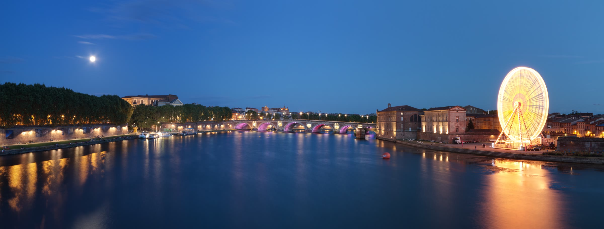
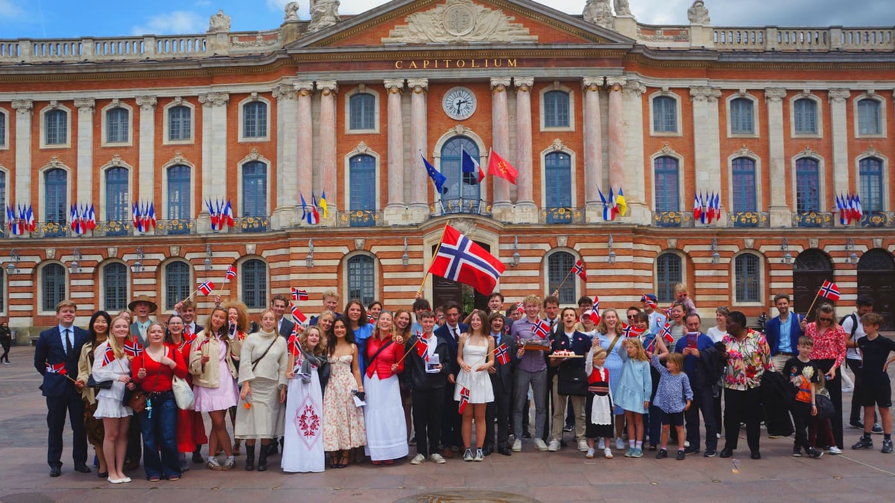
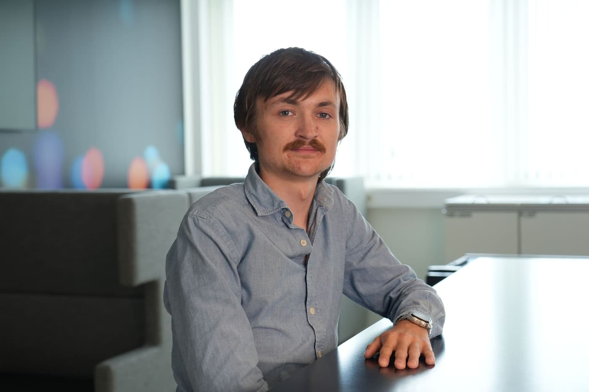
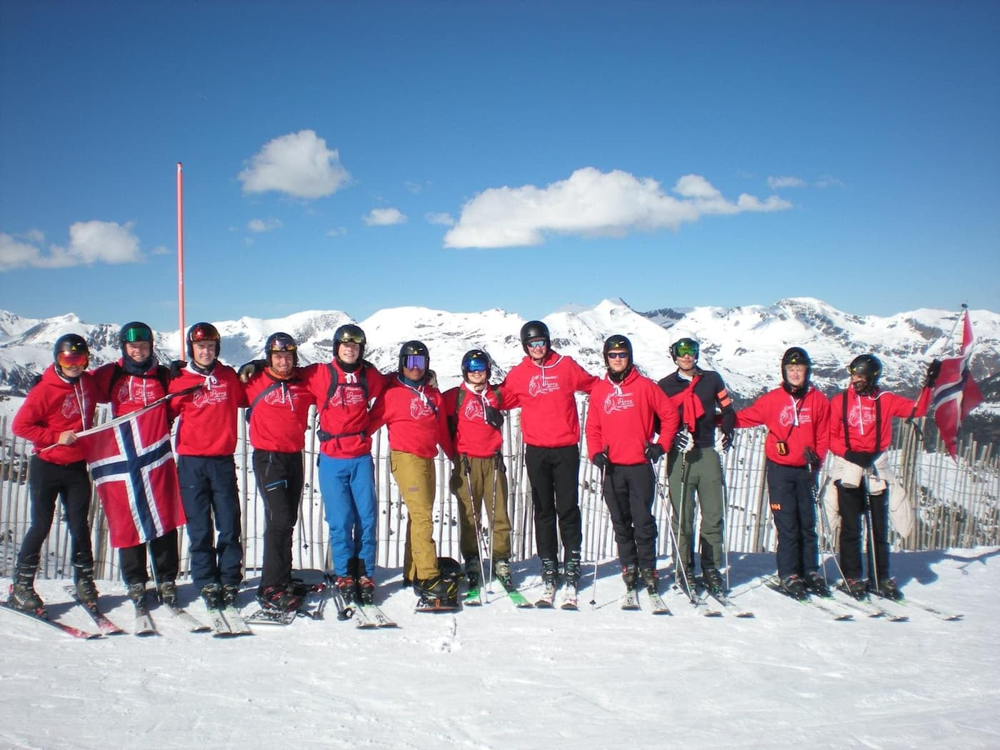
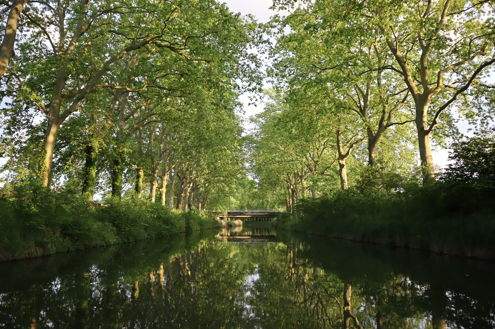
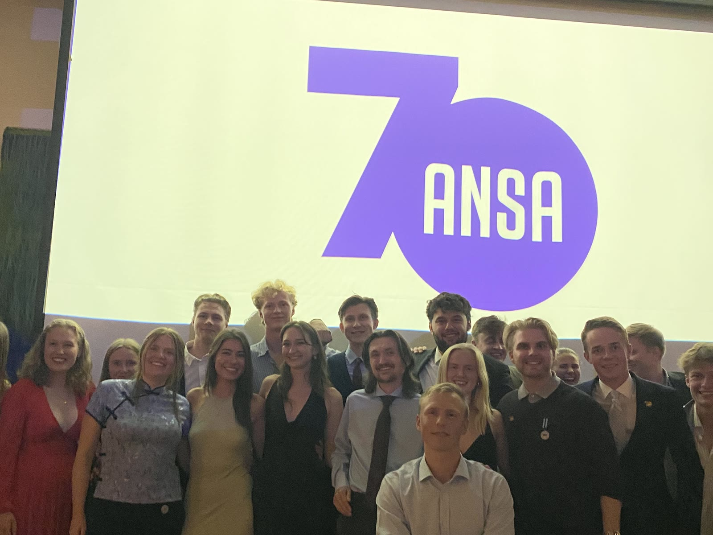
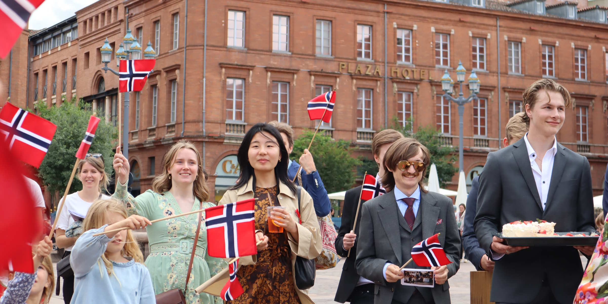

Bli ingeniør i Frankrike!
NORGINSA er et femårig masterstudium i teknologi ved INSA Toulouse, lagt til rette for nordmenn. Du trenger ikke kunne fransk for å søke: det lærer du underveis, sammen med de andre nordmennene.
5 år
Integrert Master i Teknologi
Fransk?
Ikke et krav for å søke!
Lånekassen
Gir støtte i bøtter og spann
~15. april
Søknadsfrist
Hva er NORGINSA?
INSA Toulouse er en statlig fransk ingeniørhøyskole (grande école), og NORGINSA er det norske tilgangspunktet. Du går fem år, og går ut med nøyaktig samme grad som de franske studentene: en master i teknologi.
Realfagene på fransk videregående ligger et godt stykke over de norske. Derfor går alle nordmennene sammen det første året, med ekstra matte og fransk. Fra andre år sitter du i vanlig fransk klasse, men beholder retten til privattimer og ekstra tid på eksamen.

Fra studentene
«Det som til slutt overtalte meg til å reise til Toulouse var det sterke norske studentmiljøet.»
«Toulouse har blitt en by jeg er veldig glad i. Dersom man kunne flyttet byen til Norge hadde jeg garantert flyttet dit.»

Oskar Orvik Les hvorfor Oskar liker ToulouseLivet i Toulouse



Fremhevede artikler
Se alle artiklene
Lurer du på noe?
Vi er over 30 norske studenter i Toulouse, og svarer gjerne på alt fra søknad og fransk til bolig. Raskest får du svar på Instagram.